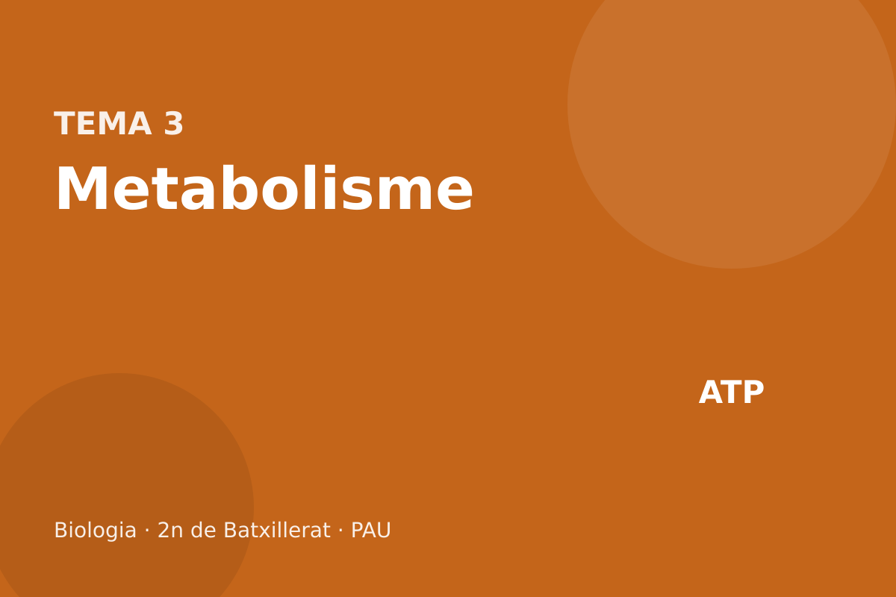

Metabolisme

Catabolisme (glucòlisi, Krebs, cadena, fermentacions, β-oxidació) i anabolisme (fotosíntesi, quimiosíntesi).
Què entra a la PAU
De cada via cal saber el nom, on passa (orgànul i, si escau, el subcompartiment), el substrat, el producte, el balanç energètic i si els coenzims s’oxiden o es redueixen. Cal comparar catabolisme i anabolisme, via i reacció, respiració aeròbica i fermentació, i fotosíntesi i respiració.
Les orientacions agrupen glucòlisi i fermentació sota «respiració cel·lular anaeròbica». Al text es fa servir el terme precís: la fermentació no té cadena de transport. La respiració anaeròbica bacteriana, que sí que en té, es distingeix en un requadre curt perquè els enunciats de vegades les barregen.
La síntesi d’aminoàcids i la lipogènesi només es demanen per situar-les a l’esquema. La síntesi de proteïnes, com a mecanisme, és al tema 5. El rendiment es dona amb el valor actual, uns 30–32 ATP per glucosa, i es recorda el balanç escolar de 36–38.
3.1 Visió general
El metabolisme és el conjunt de reaccions d’un ésser viu. Una reacció és un sol pas, catalitzat per un enzim. Una via és una seqüència de passos amb un substrat inicial i un producte final. El catabolisme degrada molècules, les oxida i allibera energia, que queda en ATP i en coenzims reduïts. L’anabolisme construeix molècules, les redueix i gasta ATP i poder reductor.
L’ATP és la moneda d’energia a curt termini. La hidròlisi ATP → ADP + Pi és exergònica i s’acobla a processos que no ho serien sols (transport actiu, síntesi, contracció). No és un magatzem: una cèl·lula en té pocs segons de reserva i el recicla contínuament. El NADH, el NADPH i el FADH2 transporten electrons, és a dir, poder reductor. NADH i FADH2 alimenten sobretot la cadena respiratòria. El NADPH alimenta sobretot les biosíntesis (Calvin, lipogènesi). No són intercanviables als enunciats: escriure «NADH de la fotosíntesi» és un error.

3.2 Glucòlisi
La glucòlisi (també escrita glicòlisi en alguns enunciats; la forma normativa és glucòlisi) parteix la glucosa en dos piruvats al citosol. No necessita oxigen ni mitocondri: també la fan els procariotes. Té una fase de despesa i una de guany.
A la despesa es gasten 2 ATP: la hexocinasa (o glucocinasa, al fetge) fosforila la glucosa, i la fosfofructocinasa fosforila la fructosa-6-fosfat. La molècula de sis carbonis es talla en dues trioses. Al guany, cada triosa s’oxida: el NAD⁺ passa a NADH (2 NADH per glucosa) i, per fosforilació a nivell de substrat, es formen 4 ATP. El producte són 2 piruvats.
Balanç net per glucosa:
glucosa + 2 NAD⁺ + 2 ADP + 2 Pi → 2 piruvat + 2 NADH + 2 ATP + 2 H⁺ + 2 H2O
Els passos irreversibles, i per tant regulats, són els de l’hexocinasa, la fosfofructocinasa i la piruvat-cinasa. La fosfofructocinasa és el punt principal: l’ATP abundant la frena.

Els deu enzims, per ordre: hexocinasa, fosfoglucosa-isomerasa, fosfofructocinasa, aldolasa, triosa-fosfat-isomerasa, gliceraldehid-3-fosfat-deshidrogenasa, fosfoglicerat-cinasa, fosfoglicerat-mutasa, enolasa, piruvat-cinasa. A la PAU en teniu prou amb el balanç i els tres passos de control.
3.3 Destí del piruvat i cicle de Krebs
Si hi ha oxigen i mitocondri, cada piruvat entra a la matriu. Allà el complex de la piruvat-deshidrogenasa el descarboxila:
piruvat + CoA + NAD⁺ → acetil-CoA + CO2 + NADH
Per glucosa (dos piruvats): 2 acetil-CoA, 2 CO2 i 2 NADH. Aquest pas no és encara el cicle de Krebs.
Al cicle de Krebs (cicle de l’àcid cítric, cicle dels àcids tricarboxílics), també a la matriu, l’acetil-CoA (2C) es condensa amb l’oxaloacetat (4C) i dona citrat (6C). L’oxaloacetat es regenera al final: per això és un cicle. L’ordre dels intermedis és citrat, isocitrat, α-cetoglutarat, succinil-CoA, succinat, fumarat, malat i oxaloacetat. En una volta surten 2 CO2, 3 NADH, 1 FADH2 i 1 GTP (equivalent a 1 ATP, fosforilació a nivell de substrat, a l’enzim que passa de succinil-CoA a succinat). El FADH2 el produeix la succinat-deshidrogenasa, que és el complex II de la cadena i està a la membrana interna, no dissolta a la matriu.
Per glucosa el cicle gira dues vegades: 4 CO2, 6 NADH, 2 FADH2 i 2 GTP. Sumats als 2 NADH de la descarboxilació del piruvat, a la matriu hi ha 8 NADH per glucosa, a més dels 2 NADH citosòlics de la glucòlisi.

El CO2 que expirem ve d’aquestes descarboxilacions (piruvat i Krebs), no «de cremar oxigen». L’oxigen que inspirem acaba, a la cadena, en aigua.
3.4 Cadena respiratòria i balanç d’ATP
La cadena és a la membrana interna del mitocondri (en procariotes, a la membrana plasmàtica). Els electrons del NADH entren pel complex I; els del FADH2, pel complex II, i per això rendeixen menys. D’allà passen a la ubiquinona, al complex III, al citocrom c i al complex IV. L’acceptor final és l’oxigen:
½ O2 + 2 e⁻ + 2 H⁺ → H2O
per cada parell d’electrons. Sense oxigen els electrons no tenen on anar, el NADH i el FADH2 no es reoxiden i tant la cadena com el Krebs s’aturen. Els complexos I, III i IV bombegen protons cap a l’espai intermembranós. El retorn dels protons a la matriu per l’ATP-sintasa fosforila l’ADP. Això és la quimiosmosi, i el conjunt, la fosforilació oxidativa. No és el mateix que la fosforilació a nivell de substrat de la glucòlisi i del Krebs, que no fa servir la cadena.

El quocient P/O (ATP formats per cada parell d’electrons que arriba a l’oxigen) no és un enter net. El valor acceptat avui és aproximadament 2,5 ATP per NADH mitocondrial i 1,5 ATP per FADH2. Els 2 NADH de la glucòlisi són al citosol i els seus electrons han d’entrar al mitocondri. Amb la llançadora malat-aspartat rendeixen com un NADH (≈2,5 cadascun). Amb la llançadora del glicerol-fosfat, típica del múscul i del cervell, rendeixen com un FADH2 (≈1,5).
Substrat: 2 ATP (glucòlisi) + 2 GTP (Krebs) = 4 ATP.
Coenzims: 10 NADH (2 citosol + 2 piruvat + 6 Krebs) i 2 FADH2, si la llançadora és la del malat. 10 × 2,5 + 2 × 1,5 = 25 + 3 = 28, més els 4 de substrat: uns 32 ATP.
Si la llançadora és la del glicerol-fosfat, els 2 NADH citosòlics compten 1,5: 8 × 2,5 + 4 × 1,5 + 4 = 20 + 6 + 4 = 30 ATP.
Per això es diu uns 30–32 ATP per glucosa. El recompte clàssic dels llibres escolars assignava 3 ATP al NADH i 2 al FADH2 i obtenia 38 (llançadora del malat, o bé un procariota, on no cal llançadora) o 36 (llançadora del glicerol-fosfat, que «costava» 2 ATP). Si un enunciat antic demana 36 o 38, expliqueu quin conveni feu servir. El valor que cal defensar avui és 30–32.
El 2,5 i el 1,5 surten del nombre de protons: uns 10 H⁺ per NADH (complexos I, III i IV) i uns 6 per FADH2, repartits entre uns 4 H⁺ per ATP exportat (sintasa més el transport d’ADP i fosfat). La c-subunitat de l’ATP-sintasa humana en té 8, i el quocient no és exactament 2,50. No cal aquest càlcul a la prova.
3.5 Fermentacions
Sense acceptor final per a la cadena, la cèl·lula només pot treure ATP de la glucòlisi, però ha de reoxidar el NADH a NAD⁺, si no la glucòlisi també s’atura. Això és la fermentació: el piruvat, o un derivat seu, fa d’acceptor orgànic dels electrons. No hi ha cadena ni mitocondri implicats. El balanç net des de glucosa és 2 ATP. És una degradació parcial: al producte final encara hi queda molta energia química.
A la fermentació làctica, el piruvat s’oxida? No: es redueix a lactat i el NADH passa a NAD⁺. La fan el múscul esquelètic quan l’aport d’oxigen no cobreix la demanda, i bacteris com Lactobacillus, responsables del iogurt i del formatge. Equació neta: glucosa → 2 lactat, amb 2 ATP. El CO2 no es desprèn.
A la fermentació alcohòlica el piruvat es descarboxila a acetaldehid i CO2, i l’acetaldehid es redueix a etanol regenerant el NAD⁺. La fan els llevats (Saccharomyces): pa, vi i cervesa. Neta: glucosa → 2 etanol + 2 CO2, amb 2 ATP.

Les orientacions anomenen «respiració anaeròbica» el conjunt glucòlisi + fermentació. En microbiologia, respiració anaeròbica és una altra cosa: hi ha cadena de transport, però l’acceptor final no és l’O2 sinó nitrat, sulfat o un altre inorgànic. Rendeix menys que la respiració aeròbica i més que la fermentació. Si l’enunciat diu «respiració anaeròbica» i parla de lactat o d’etanol, es refereix a la fermentació. A la resposta, feu servir el nom del procés (làctica o alcohòlica) i el balanç de 2 ATP.
Compareu el rendiment de la respiració aeròbica i el de la fermentació làctica a partir d’una glucosa. Per què, si rendeix tan poc, la fermentació continua existint?
Aeròbica: uns 30–32 ATP (o 36–38 si l’enunciat imposa el conveni clàssic). Làctica: 2 ATP. La fermentació no depèn de l’oxigen ni de mitocondris, regenera el NAD⁺ i és ràpida. En un múscul en dèficit d’oxigen, 2 ATP ara són millor que cap. En un llevat, n’hi ha prou per créixer mentre hi hagi sucre.
3.6 β-oxidació
Els àcids grassos són una reserva més energètica que la glucosa, però no es degraden per la glucòlisi. Al citosol, l’àcid gras s’activa a acil-CoA amb despesa equivalent a 2 ATP (l’ATP passa a AMP). L’acil-CoA entra a la matriu mitocondrial per la llançadora de la carnitina. Allà, la β-oxidació talla la cadena de dos en dos carbonis. Cada volta allibera un acetil-CoA i redueix un NAD⁺ i un FAD.
Un àcid gras de n carbonis (n parell) dona n/2 acetil-CoA i fa (n/2 − 1) voltes. L’acetil-CoA entra al Krebs. No és el camí de la glucosa: un greix no es converteix en piruvat per aquesta via, i els animals no poden fer glucosa neta a partir d’acetil-CoA.
8 acetil-CoA i 7 voltes (7 NADH i 7 FADH2 de la β-oxidació), menys els 2 ATP de l’activació.
Amb el conveni actual (acetil-CoA ≈ 10 ATP: 3 NADH × 2,5 + 1 FADH2 × 1,5 + 1 GTP): 8 × 10 + 7 × 2,5 + 7 × 1,5 − 2 = 80 + 17,5 + 10,5 − 2 = 106 ATP.
Amb el conveni clàssic (acetil-CoA = 12): 8 × 12 + 7 × 5 − 2 = 129 ATP. Si l’enunciat no diu quin conveni vol, escriviu 106 i mencioneu el 129 com a recompte escolar antic. El que segur que demanen és el sentit de la via: matriu, acetil-CoA, NADH i FADH2, i que rendeix molt més que una glucosa.
3.7 Anabolisme heteròtrof
L’anabolisme heteròtrof construeix molècules orgàniques a partir d’altres molècules orgàniques. No fixa CO2. Tres processos, i només això:
La síntesi d’aminoàcids munta l’esquelet de carboni (que ve d’intermedis de la glucòlisi o del Krebs) i hi posa nitrogen, sovint per transaminació a partir de glutamat. Passa al citosol i a la matriu, segons l’aminoàcid. Els humans no fabriquem els aminoàcids essencials: els hem de menjar.
La síntesi de proteïnes és la traducció, als ribosomes, i gasta ATP i GTP. El mecanisme (codi, RNAt, fases) és al tema 5, com indiquen les orientacions. A l’esquema del metabolisme només cal situar-la com a via que consumeix aminoàcids i energia.
La lipogènesi fabrica àcids grassos al citosol, a partir d’acetil-CoA, i gasta NADPH. No és la β-oxidació al revés: són enzims diferents, compartiments diferents i coenzims diferents (NADPH aquí, NAD⁺ i FAD allà). L’acetil-CoA mitocondrial surt cap al citosol en forma de citrat.
3.8 Fotosíntesi
La fotosíntesi oxigènica, la de plantes, algues i cianobacteris, fa servir llum per arrencar electrons de l’aigua, reduir NADP⁺ i fosforilar ADP. Amb aquest ATP i aquest NADPH fixa CO2 i en fa sucre. L’equació que mostra d’on surt l’oxigen és:
6 CO2 + 12 H2O → C6H12O6 + 6 O2 + 6 H2O
L’O2 prové de l’aigua, no del CO2. La forma simplificada 6 CO2 + 6 H2O → C6H12O6 + 6 O2 cancel·la sis aigües i amaga aquest fet. En eucariotes tot passa al cloroplast.
La fase lluminosa és a la membrana del tilacoide. Al fotosistema II, la llum excita el P680. El P680⁺ és un oxidant tan fort que arrenca electrons de l’aigua: és la fotòlisi, i l’O2 es desprèn aquí. Els electrons baixen de nivell pel camí plastoquinona → citocrom b6f → plastocianina i alimenten un gradient de protons. Al fotosistema I, la llum excita el P700 i els electrons arriben a la ferredoxina i al NADP⁺, que passa a NADPH. Aquest flux, obert, és la fotofosforilació acíclica: produeix ATP, NADPH i O2. Si el cloroplast necessita més ATP que NADPH, els electrons tornen del fotosistema I a la cadena sense fer NADPH ni trencar aigua: fotofosforilació cíclica, només ATP.

La fase fosca no vol dir que passi de nit: vol dir que no capta fotons directament. És el cicle de Calvin, a l’estroma, i s’atura a les fosques perquè li falten l’ATP i el NADPH de la fase lluminosa. La rubisco fixa CO2 sobre la ribulosa-1,5-bisfosfat (RuBP, 5C) i en surten dues molècules de 3-fosfoglicerat. Reduir-les a gliceraldehid-3-fosfat gasta ATP i NADPH. Una part del sucre surt del cicle; la resta, amb més ATP, regenera la RuBP. Per cada CO2 es gasten 2 NADPH i 3 ATP. Per a una glucosa (6 CO2): 12 NADPH i 18 ATP.

Són complementàries, no inverses enzim a enzim. La fotosíntesi redueix el CO2 i oxida l’aigua, amb llum, al cloroplast. La respiració oxida el sucre i redueix l’oxigen a aigua, al mitocondri, i l’energia queda en ATP. Una planta respira de dia i de nit. De dia, a la llum, la fotosíntesi sol superar la respiració i el balanç de gasos és d’entrada neta de CO2.
Un herbicida bloqueja el flux d’electrons entre el fotosistema II i el fotosistema I. Deixaran de formar-se O2, ATP i NADPH? Podrà continuar el Calvin?
La fotòlisi s’atura perquè el P680 no es pot reoxidar: no hi haurà O2. Tampoc no arribaran electrons al NADP⁺: no hi haurà NADPH. L’ATP de la via acíclica també cau. Sense ATP ni NADPH el Calvin s’atura, encara que la rubisco no sigui la diana directa.
3.9 Quimiosíntesi i fotosíntesi bacteriana
La fotosíntesi bacteriana no és tota igual. Els cianobacteris fan la mateixa fotosíntesi oxigènica que les plantes: trenquen aigua i alliberen O2, i van ser els responsables de l’oxigen atmosfèric. Els bacteris porpra i els verds del sofre fan fotosíntesi anoxigènica: el donador d’electrons no és l’aigua sinó, per exemple, H2S, i no alliberen O2. Tenen bacterioclorofil·la i un sol fotosistema. No cal el detall dels centres de reacció.
La quimiosíntesi no fa servir llum. Bacteris quimiolitòtrofs oxiden un compost inorgànic (NH4⁺ els nitrificants, H2S els del sofre, Fe²⁺ alguns del ferro) i amb l’energia obtinguda fan ATP i poder reductor, i fixen CO2, sovint pel cicle de Calvin. Nitrosomonas oxida amoni a nitrit; Nitrobacter, nitrit a nitrat. Són autòtrofs químics, no fotosintètics.

3.10 Mapa del tema
L’esquema que les orientacions donen per bo és el de la UB de biologia de la PAU (esquema general del metabolisme). El que heu de poder assenyalar-hi a cegues és: glucòlisi al citosol; piruvat cap a acetil-CoA o cap a fermentació; acetil-CoA cap al Krebs o, en sentit biosintètic, cap a àcids grassos; Krebs i cadena al mitocondri; β-oxidació abocant acetil-CoA; fotosíntesi i quimiosíntesi com a entrades de matèria inorgànica; aminoàcids entre el Krebs i les proteïnes. La fletxa «proteïnes» no s’explica aquí: és la traducció.
Resum
| Via | On | Entra | Surt | Coenzims i ATP |
|---|---|---|---|---|
| Glucòlisi | citosol | glucosa | 2 piruvat | net +2 ATP, +2 NADH |
| Piruvat → acetil-CoA | matriu | piruvat | acetil-CoA + CO2 | +1 NADH (×2 per glucosa) |
| Krebs | matriu | acetil-CoA | 2 CO2 | 3 NADH, 1 FADH2, 1 GTP |
| Cadena | membrana interna | NADH, FADH2, O2 | H2O, ATP | ≈2,5 i ≈1,5 ATP |
| Fermentació | citosol | piruvat + NADH | lactat, o etanol + CO2 | net 2 ATP des de glucosa |
| β-oxidació | matriu | acil-CoA | acetil-CoA | 1 NADH i 1 FADH2 per volta |
| Fase lluminosa | tilacoide | H2O, llum, NADP⁺, ADP | O2, NADPH, ATP | el NADPH és de l’anabolisme |
| Calvin | estroma | CO2, ATP, NADPH | triosa, i es regenera RuBP | 3 ATP i 2 NADPH per CO2 |
Errors típics a la PAU
- Posar la glucòlisi al mitocondri o el Krebs al citosol.
- Dir que l’oxigen es converteix en CO2, o que el CO2 de la fotosíntesi es converteix en O2.
- Donar 38 ATP com si fos el valor real, sense dir que és el conveni clàssic.
- Comptar el NADH de la fermentació com si anés a la cadena.
- Confondre NADH i NADPH.
- Dir que la fase fosca només passa de nit, o situar-la al tilacoide.
- Tractar la β-oxidació i la lipogènesi com la mateixa via en dos sentits.
Glossari
- Fosforilació a nivell de substrat
- Formació d’ATP (o GTP) per transferència directa d’un fosfat, sense cadena ni gradient.
- Fosforilació oxidativa
- Formació d’ATP acoblada a la cadena respiratòria i al gradient de protons.
- Quimiosmosi
- Ús d’un gradient de protons per fer girar l’ATP-sintasa.
- P/O
- ATP obtinguts per parell d’electrons que redueix un àtom d’oxigen. Avui: ≈2,5 (NADH) i ≈1,5 (FADH2).
- Fermentació
- Reoxidació del NADH per un acceptor orgànic, sense cadena. Net: 2 ATP per glucosa.
- Fotòlisi
- Trencament de l’aigua al fotosistema II, amb alliberament d’O2.
- Rubisco
- Enzim que fixa CO2 sobre la RuBP al cicle de Calvin.
- Quimiosíntesi
- Fixació de CO2 amb energia d’oxidar un compost inorgànic, sense llum.
Autoavaluació
Escriviu el balanç net de la glucòlisi i digueu on passa.
Resposta
Al citosol. Glucosa + 2 NAD⁺ + 2 ADP + 2 Pi → 2 piruvat + 2 NADH + 2 ATP + 2 H⁺ + 2 H2O.
Quants NADH, FADH2 i CO2 surten del Krebs per una glucosa, sense comptar la descarboxilació del piruvat?
Resposta
Dues voltes: 6 NADH, 2 FADH2, 4 CO2 i 2 GTP. La descarboxilació del piruvat afegeix 2 NADH i 2 CO2 més.
Per què el rendiment real no és 36 ni 38 ATP?
Resposta
Perquè el P/O no és 3 i 2, sinó aproximadament 2,5 i 1,5, i perquè la llançadora dels NADH citosòlics pot ser menys eficient. El resultat és uns 30–32 ATP. 36 i 38 són el conveni escolar antic.
La fermentació alcohòlica desprèn CO2 i la làctica no. D’on surt aquest CO2 i quin és el balanç d’ATP de totes dues?
Resposta
De la descarboxilació del piruvat a acetaldehid. Totes dues rendeixen 2 ATP nets per glucosa.
On es trenca l’aigua i on es fixa el CO2?
Resposta
L’aigua es trenca al fotosistema II, a la membrana del tilacoide. El CO2 el fixa la rubisco a l’estroma.
Un bacteri oxida NH4⁺ i fixa CO2 sense llum. Com es diu el procés i en què es diferencia d’un cianobacteri?
Resposta
És quimiosíntesi. El cianobacteri fa fotosíntesi oxigènica: la font d’energia és la llum i desprèn O2.
Biologia · 2n de Batxillerat · dossier de teoria